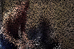

|  |
The library includes two renderers, one which extends the PImage class and operates exactly like the Processing Movie library, and another which stores video data in an openGL texture and contains some specialized drawing methods.
[project page]
[git repository]
[processing video libraries]